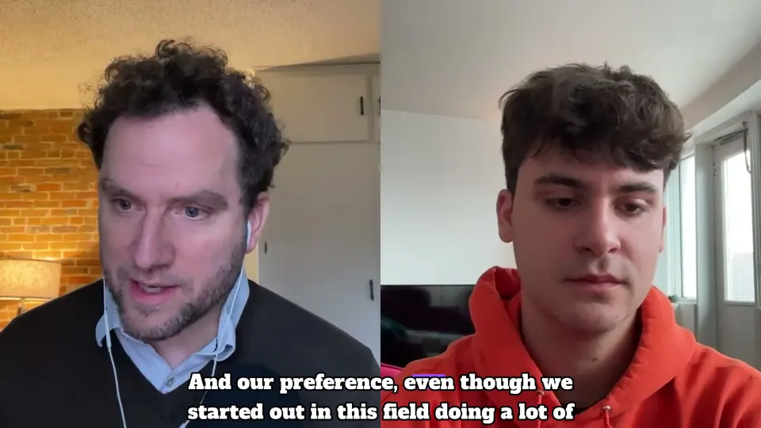
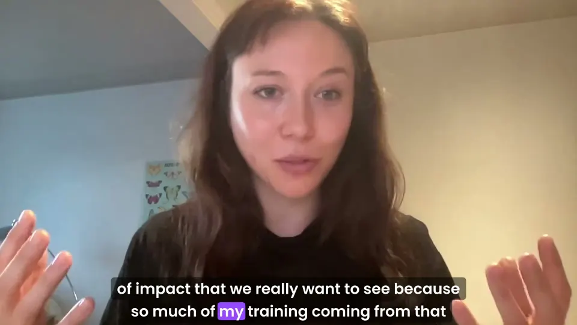
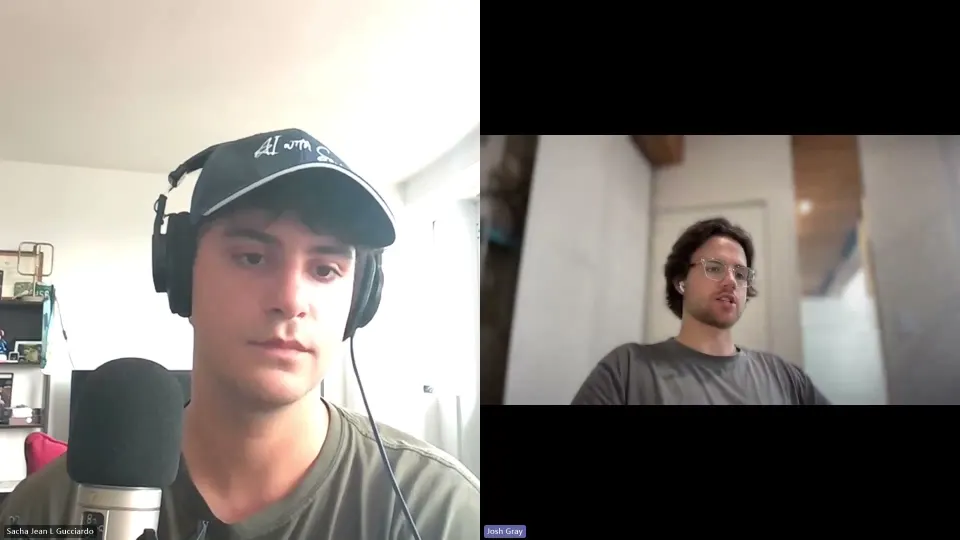
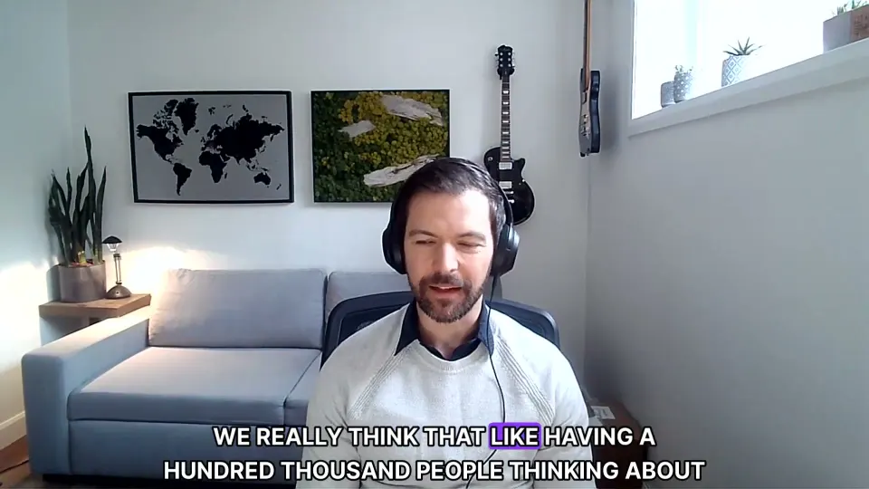
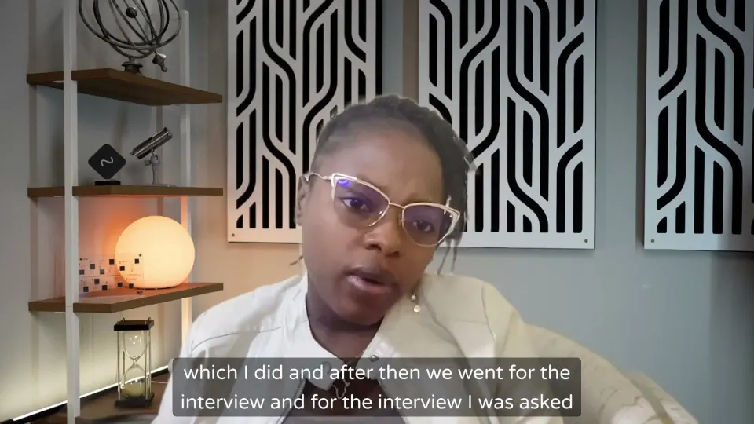
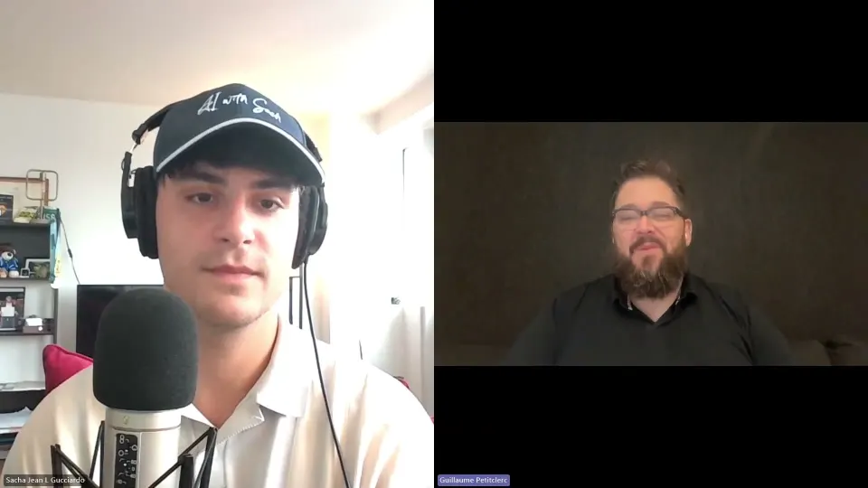
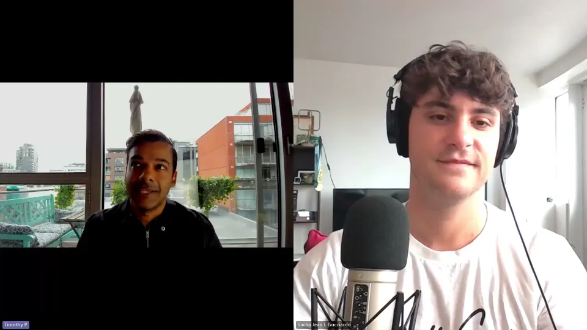
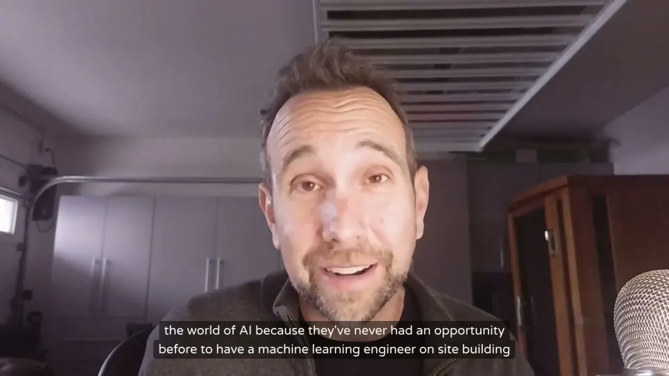

Guests
The people building AI, questioning it and living with it, in their own words.
 AjithCo-founder, Cactus (Y Combinator batch); previously co-founder of Turing Labs
AjithCo-founder, Cactus (Y Combinator batch); previously co-founder of Turing Labs Benoit AubertProfesseur à HEC Montréal, chercheur au CIRANO (ancien directeur de la Roe School of Business et de l'École de gestion de l'information à l'Université Victoria de Wellington)AvinashCo-founder and technical lead, Cactus (Y Combinator batch)
Benoit AubertProfesseur à HEC Montréal, chercheur au CIRANO (ancien directeur de la Roe School of Business et de l'École de gestion de l'information à l'Université Victoria de Wellington)AvinashCo-founder and technical lead, Cactus (Y Combinator batch) Cédric BeaudoinSenior Associate, impact and technology investing, Investissement Québec (IQ)
Cédric BeaudoinSenior Associate, impact and technology investing, Investissement Québec (IQ) Philippe BeaudoinAI researcher, co-founder of Element AI, former Google engineer, author of Field Notes on Something, and founder of the startup Waverly
Philippe BeaudoinAI researcher, co-founder of Element AI, former Google engineer, author of Field Notes on Something, and founder of the startup Waverly Anick BeaulieuCEO of C2, the experiential studio behind C2 Montréal
Anick BeaulieuCEO of C2, the experiential studio behind C2 Montréal Nabil BeitinjanehFaculty Lecturer and Academic Program Coordinator, McGill University School of Continuing Studies
Nabil BeitinjanehFaculty Lecturer and Academic Program Coordinator, McGill University School of Continuing Studies BenediktCo-founder of Jamie, an AI meeting assistant (previously co-founder of TeamTap)
BenediktCo-founder of Jamie, an AI meeting assistant (previously co-founder of TeamTap) Jade Benson-PoitrasÉtudiante en droit, stagiaire chez Rexlex et assistante de recherche à l'Université d'Ottawa
Jade Benson-PoitrasÉtudiante en droit, stagiaire chez Rexlex et assistante de recherche à l'Université d'Ottawa Olivier BlaisCofondateur et VP Science décisionnelle chez MoovAI; président de la délégation canadienne pour l'IA à l'ISO/IEC et auteur de la norme ISO 25058
Olivier BlaisCofondateur et VP Science décisionnelle chez MoovAI; président de la délégation canadienne pour l'IA à l'ISO/IEC et auteur de la norme ISO 25058
Shea BrownCEO of BABL AI and former astrophysics professor JC BtaicheCEO and founder of Fuse, a fusion energy company based in CanadaCéline Castets-RenardProfesseure titulaire à l'Université d'Ottawa et titulaire de la Chaire de recherche sur l'IA responsable dans un contexte mondial
JC BtaicheCEO and founder of Fuse, a fusion energy company based in CanadaCéline Castets-RenardProfesseure titulaire à l'Université d'Ottawa et titulaire de la Chaire de recherche sur l'IA responsable dans un contexte mondial Amogh ChaturvediCo-founder, Human Behavior (Y Combinator batch; Stanford dropout)
Amogh ChaturvediCo-founder, Human Behavior (Y Combinator batch; Stanford dropout)
Allison CohenSenior applied AI project manager, AI for Humanity team, Mila Charles DemontignyFondateur de QuébGPT (anciennement Fluxion Conseil), créateur du chatbot CaptureBishop Thomas DowdCatholic Bishop of Sault Ste. Marie, Ontario (based in Sudbury); former Ericsson telecom employee and early webmaster
Charles DemontignyFondateur de QuébGPT (anciennement Fluxion Conseil), créateur du chatbot CaptureBishop Thomas DowdCatholic Bishop of Sault Ste. Marie, Ontario (based in Sudbury); former Ericsson telecom employee and early webmaster Alain FilottoDigital Evidence Specialist, Alphafox Forensics; retired RCMP member and former Chief Operations Officer, TCS Forensics
Alain FilottoDigital Evidence Specialist, Alphafox Forensics; retired RCMP member and former Chief Operations Officer, TCS Forensics Thomas FortoulHost of the Thinking Tech podcast; helping an EdTech startup at Next.ai, Montréal
Thomas FortoulHost of the Thinking Tech podcast; helping an EdTech startup at Next.ai, Montréal
Josh GrayCo-founder and CEO of Artemis
Alexandre GuilbaultFounder of the TELUS AI Accelerator, leading a team of over 65 AI engineers at TELUS JagSenior Solutions Engineer, Enterprise, Salesforce (data and AI specialist)
JagSenior Solutions Engineer, Enterprise, Salesforce (data and AI specialist) Jean-SébastienCo-fondateur de Fireraven, startup montréalaise de cybersécurité pour l'IA; ancien co-fondateur et CTO de Quotes-n-Go
Jean-SébastienCo-fondateur de Fireraven, startup montréalaise de cybersécurité pour l'IA; ancien co-fondateur et CTO de Quotes-n-Go
Kauna MalgwiFormer Facebook content moderator (via Sama, Nairobi), leader of the Nigeria chapter of the Content Moderators Union, TIME100 AI 2024 honoree Youssef MriniSenior Solutions Engineer, Databricks
Youssef MriniSenior Solutions Engineer, Databricks Fatih NayebiVice President of Data and AI at Aldo Group and lecturer at McGill University's Desautels Faculty of Management
Fatih NayebiVice President of Data and AI at Aldo Group and lecturer at McGill University's Desautels Faculty of Management Anne NguyenDirectrice IA au Conseil de l'innovation du Québec
Anne NguyenDirectrice IA au Conseil de l'innovation du Québec Natalija PavicProduct marketing leader and Alliances strategy lead for Salesforce Commerce Cloud, Salesforce; host of the Salesforce Commerce Cloud Innovations podcast
Natalija PavicProduct marketing leader and Alliances strategy lead for Salesforce Commerce Cloud, Salesforce; host of the Salesforce Commerce Cloud Innovations podcast
Guillaume PetitclercCo-fondateur et VP Marketing et Partenariats, MoovAI (aussi CMO et co-fondateur de Snitch AI) Og RamosEngineer, data consultant and tech tinkerer
Og RamosEngineer, data consultant and tech tinkerer Suzanne TalonDirectrice générale, Calcul Québec
Suzanne TalonDirectrice générale, Calcul Québec
TimothyCo-Founder and Managing Director of the AI Launch Lab; member of the AI Advisory Board at Dawson College
Mike TodascoFormer senior director of innovation at PayPal, inventor with over 100 US utility patents, writer on AI